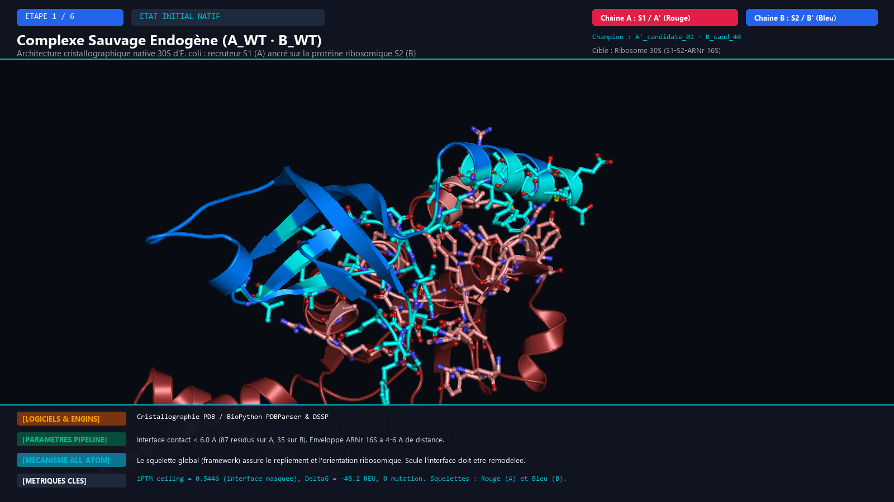

cand_01_B_cand_40
Visualisation 3D en coordonnées réelles des structures PDB générées à chaque étape du pipeline, mettant en évidence l'apparition progressive des 29 mutations sur la chaîne A' et des 37 mutations sur la chaîne B', avec la justification biophysique des logiciels et paramètres exécutés.
